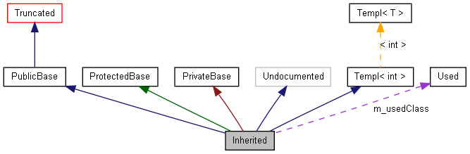

Graph LegendThis page explains how to interpret the graphs that are generated by doxygen.Consider the following example: /*! Invisible class because of truncation */ class Invisible { }; /*! Truncated class, inheritance relation is hidden */ class Truncated : public Invisible { }; /* Class not documented with doxygen comments */ class Undocumented { }; /*! Class that is inherited using public inheritance */ class PublicBase : public Truncated { }; /*! A template class */ template<class T> class Templ { }; /*! Class that is inherited using protected inheritance */ class ProtectedBase { }; /*! Class that is inherited using private inheritance */ class PrivateBase { }; /*! Class that is used by the Inherited class */ class Used { }; /*! Super class that inherits a number of other classes */ class Inherited : public PublicBase, protected ProtectedBase, private PrivateBase, public Undocumented, public Templ<int> { private: Used *m_usedClass; };

The boxes in the above graph have the following meaning:
|